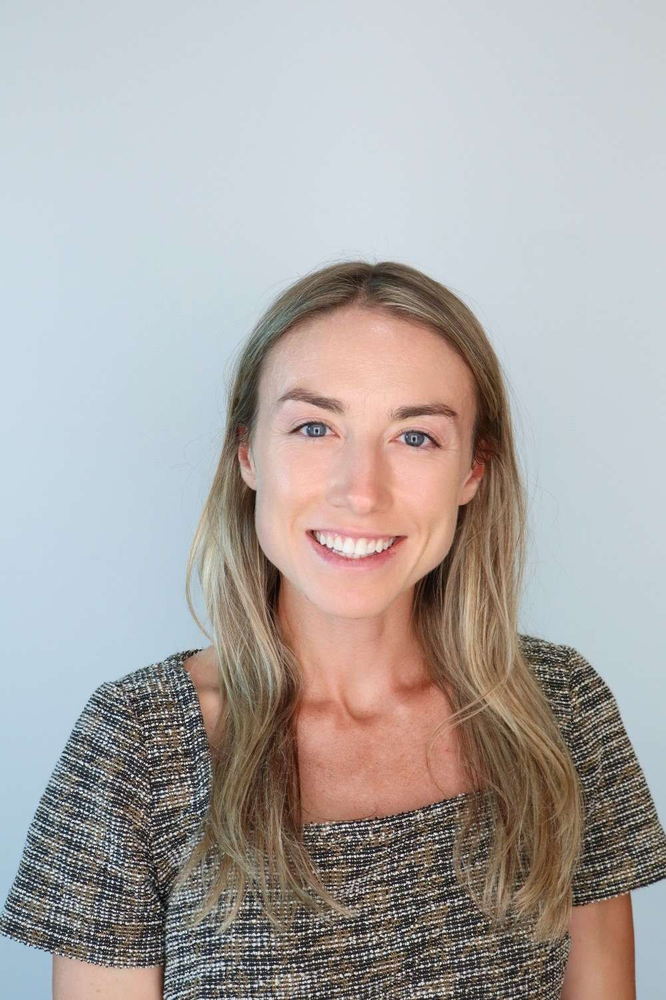

Assistant Professor of Environmental Engineering · University of Notre Dame
We study how household environmental technologies perform in the real world, and how to make sure they deliver the health and climate benefits they promise.
ETHICA · Evaluating Technologies for Health Impacts, Climate, and Affordability

Measuring emissions and what people breathe.
Randomized trials to test how to increase adoption and sustained use, and how that use shapes health and well-being.
Analyzing what households can afford, modeling the health and climate benefits at scale, and planning the energy systems needed to get there.
The burdens these technologies aim to reduce fall hardest on women and marginalized communities. Ethica, Latin for ethics, reflects our commitment to ethical research that translates into tangible impact for them.
I am recruiting PhD students interested in household energy, air quality, energy systems, and/or field research. Please reach out with a short note about your interests and a CV.